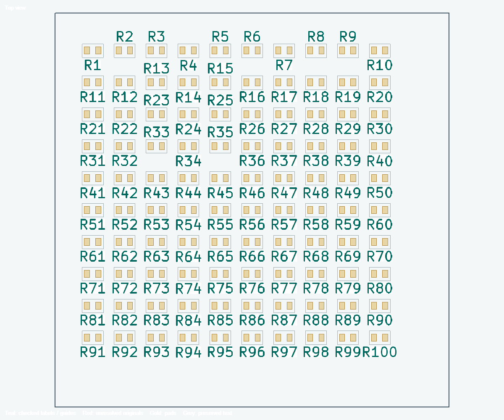
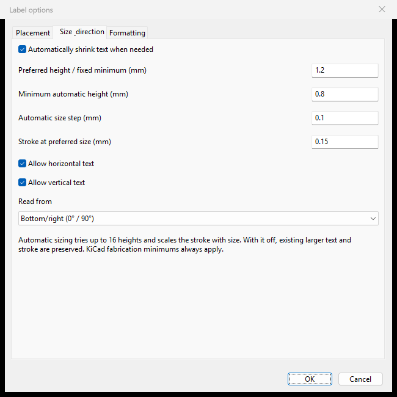
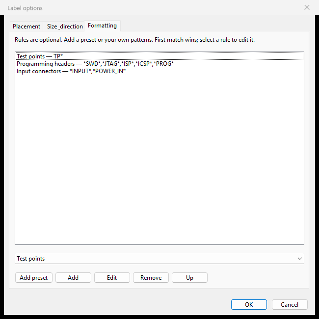
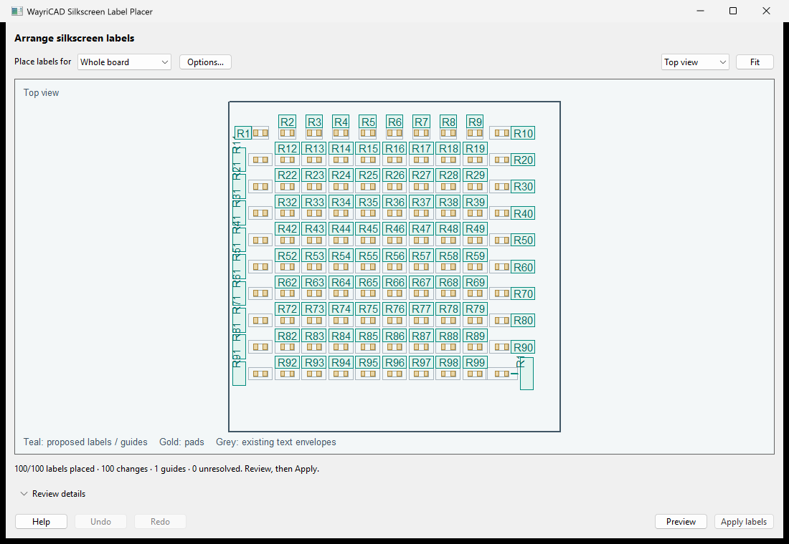
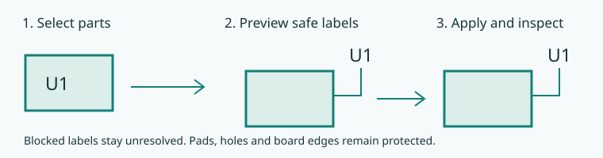
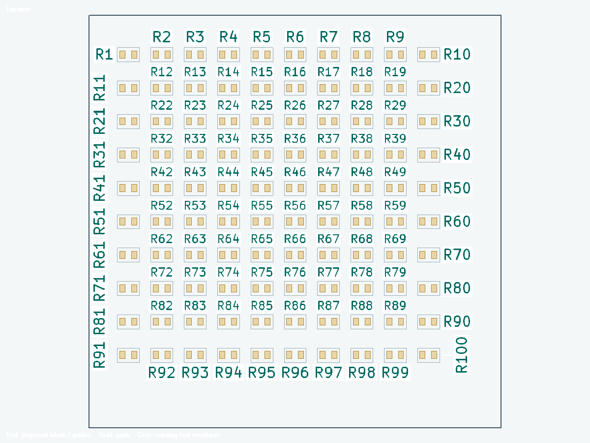
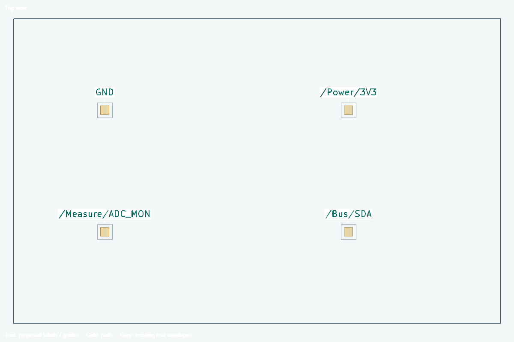

Select parts, Preview, inspect and Apply labels. Options stay out of the main workflow.

Options can include visible values or existing board text on silk and change minimum height, stroke, spacing, search distance and guide threshold. Hidden/locked text and locked parts stay untouched. Native board fabrication minimums take priority. Text contents and schematic associations are preserved.
Options → Size & direction enables automatic sizing from a preferred height down to your minimum, using the specified step. An already smaller label is not enlarged unless the native fabrication floor requires it. With automatic sizing off, larger existing text is preserved. Native fabrication floors always apply. Allow horizontal, vertical and/or 45-degree text. Other fallback angles accepts any finite angle from 0 up to 180 degrees, at most 36 total. Defaults include 15-degree fallbacks. Choose bottom/right, top/left (adds 180 degrees) or either direction, viewed from the label side.
Options → Formatting offers editable Test points (TP*, knockout), Programming headers (SWD/JTAG/ISP/ICSP/PROG value patterns, bold) and Input connectors (INPUT/POWER_IN value patterns, italic) presets. Add a preset and check its pattern; connectors are not classified automatically. Enter references such as J1,J4, or wildcard patterns. Commas mean alternatives; filled reference/value/text criteria must all match. First matching rule wins. Each style can Keep existing, turn On or turn Off. Knockout's native filled envelope is collision checked. Unresolved labels keep their original styles.


Distant component labels use a checked guide path ending outside the body. A blocked guide rejects the candidate. Other accessible label and component edges are tried before rejection; one bounded wider graph can route around a component group. No route may bypass pad, courtyard, silkscreen or board-edge clearance. Repeat placement manages only plugin-owned guides; ordinary artwork is preserved.
Dense search is automatic: clearance-scale positions, nearby common-direction labels followed by rotated alternatives, larger labels first and spatially indexed collision checks. Native DRC on the 100-part fixture found zero violations after placement. Marble had no new violations, but 97 of 182 eligible references remained unresolved; crowded-board coverage is reported rather than assumed.

Local bounded search and conservative text/body envelopes can leave crowded labels unresolved. The dense search can try alternate orientations and checked multi-bend guides. Blocked guide paths remain unresolved. The viewport renders native glyphs at board scale; conservative native text envelopes are used by the planner. A changed board invalidates Preview and Undo. Closing the window discards its history; ordinary PCB Editor Undo is not claimed. KiCad 10 native runtime is required; other platforms and KiCad 11 need validation.

Full user guide and installation
Accepted labels must stay outside every courtyard on their silkscreen side, including their own component. Both faces and incomplete courtyard drawings are reserved. Pads, mask openings, other text, silk graphics and guides remain obstacles. Clearance is never relaxed. Automatically shrink text is enabled by default and respects your minimum and KiCad fabrication floors. Unresolved originals remain unchanged and may still have existing violations.
The preview uses native glyph geometry at board scale, without a minimum screen-font enlargement. Apply checks the actual native envelope and rolls back if it exceeds the reviewed box.

Each Preview chooses sizes per label. Keep Automatically shrink text when needed enabled to try preferred height down to your minimum and native fabrication floors. Keep Guide lines for distant or ambiguous component labels enabled to search nearby free space and draw a checked straight or multi-bend association line. Search distance bounds the search; Guide line beyond distance controls when a line is required. No legal position or guide means unresolved, never a forced overlap.
Nearby common-direction text is tried first, including smaller sizes. Nearby 45-degree rotations follow, then other enabled angles. Distant guided positions are the last resort. Offset footprint-edge slots allow staggered labels around component groups. Nearby means within 2 mm of the footprint envelope, limited by your smaller search distance. Search beyond footprint controls distant reach, including large connectors. Each label keeps its own association. Guides can use multiple differently angled segments; every full stroke must clear courtyards, pads, text and board edges. A bounded router may miss a feasible path. No legal result means unresolved.
Options → Placement → Use connected net names for test point labels enables this optional mode. Reference pattern TP* is the default. One connected net is required; missing or ambiguous nets remain unchanged. A separate managed silk annotation shows the full net name, while the actual TP reference stays intact and only its display is suppressed. Preview shows the real net-name geometry and checks the same text/guide clearances. Undo/Redo restores annotation and visibility. Disable the option and Preview/Apply again to restore references. Rerun after connectivity, net-name or component-position changes.

Nearby candidates are ranked by distance from the owning component. A label more than 2 mm from its body, or more than 0.2 mm closer to another body, needs a checked guide. With guides disabled, those candidates are rejected. Legal unambiguous originals stay in place where possible. Horizontal text and smaller sizes are tried before rotations.
The collision envelope encloses native rendered glyphs, including their full stroke and knockout background, plus the required clearance. Invisible font layout padding is not an obstacle. Apply verifies the actual rendered envelope. Red unresolved originals may retain pre-existing pad, body or board-edge violations; review them separately.